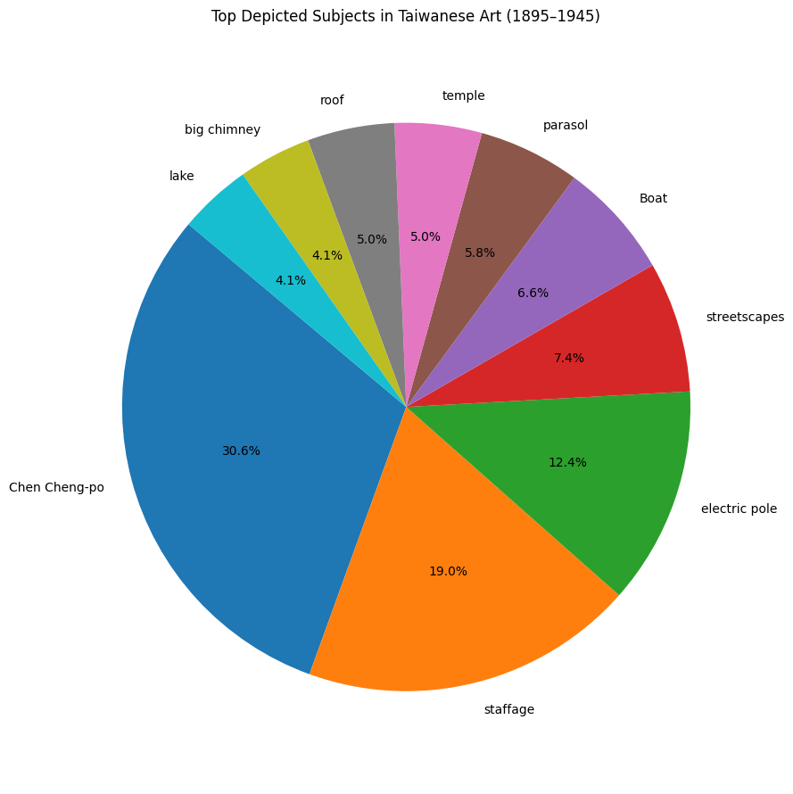

Cheng-Po
The Chen Cheng-Po artistic production
The focus on the main artist in the period (1895–1947)
Chen Cheng-po was a pioneering Taiwanese painter renowned for his role in the development of modern art in Taiwan during the Japanese colonial period. Educated at the Tokyo School of Fine Arts, he became one of the first Taiwanese artists to be selected for the prestigious Imperial Art Exhibition in Japan.
His work blended Western oil painting techniques with distinctly local themes, often depicting Taiwanese landscapes, street scenes, and cultural life in vivid color and expressive brushwork. Beyond his artistic achievements, Chen was also an educator and civic leader. Tragically, he was executed during the 228 Incident in 1947, but his legacy endures as a symbol of artistic innovation and cultural identity in Taiwan.

Chen Cheng-Po
PhotographExploring more about Chen Cheng-po's Paintings
We performed a dedicated set of questions related to Chen Cheng-Po, to retrieve additional information available from Wikidata.
- Which works by Chen Cheng-Po are preserved in museums and what materials or artistic techniques did he use?
- Which figures accompanied him on his artistic journey?
- What historical events influenced his life and career and has he received any awards or recognitions?
Most Important Works, Creation Dates, Museum, Materials and Techniques
| # | Work | Work Label | Creation Date | Museum Label | Material Label |
|---|---|---|---|---|---|
| 1 | http://www.wikidata.org/entity/Q28914169 | Tamsui | 1933-01-01T00:00:00Z | National Taiwan Museum of Fine Arts | oil paint |
| 2 | http://www.wikidata.org/entity/Q28914169 | Tamsui | 1933-01-01T00:00:00Z | National Taiwan Museum of Fine Arts | canvas |
| 3 | http://www.wikidata.org/entity/Q28914188 | Chiayi Park | NaN | NaN | oil paint |
| 4 | http://www.wikidata.org/entity/Q28914188 | Chiayi Park | NaN | NaN | canvas |
| 5 | http://www.wikidata.org/entity/Q28914196 | Snow on Mount Yu | 1947-01-01T00:00:00Z | NaN | oil paint |
| 6 | http://www.wikidata.org/entity/Q28914196 | Snow on Mount Yu | 1947-01-01T00:00:00Z | NaN | panel |
| 7 | http://www.wikidata.org/entity/Q115522767 | Q115522767 | 1935-01-01T00:00:00Z | http://www.wikidata.org/.well-known/genid/abe5... | canvas |
| 8 | http://www.wikidata.org/entity/Q124368166 | Q124368166 | 1930-01-01T00:00:00Z | Yamaguchi Prefectural Museum of Art | NaN |
Chen Cheng-Po was a prominent artist in the Taiwanese art scene, known for his contributions to modern painting and his role in shaping the Taiwan's artistic evolution during the Japanese colonial period. His works are now preserved in major institutions such as the National Taiwan Museum of Fine Arts and the Yamaguchi Prefectural Museum of Art, highlighting his lasting artistic legacy. Among his most renowned creations are Tamsui (1933), Chiayi Park, and Snow on Mount Yu (1947), painted using traditional techniques such as oil on canvas and panel, through which he captured the landscapes and atmosphere of his time.
Related Artists
| # | Artist | Artist Label |
|---|---|---|
| 1 | http://www.wikidata.org/entity/Q3847009 | Ishikawa Kinichiro |
A key figure in his artistic development was Ishikawa Kinichiro, a Japanese artist who significantly influenced his style. Beyond his painting career, Chen Cheng-Po played a crucial role in the artistic community, fostering cultural exchanges between Taiwan and Japan.
Historical events
| # | Event | Description | Event Label |
|---|---|---|---|
| 1 | http://www.wikidata.org/entity/Q244939 | 1947 uprising in Taiwan | 228 Incident |
However, his career was deeply affected by the political and social turmoil of his time, particularly the February 28 Incident of 1947, a pivotal moment in Taiwan’s history that had a direct impact on his life and ultimately led to his tragic execution.
Awards and Recognitions
| # | Award | Award Label |
|---|---|---|
| 1 | http://www.wikidata.org/entity/Q4346554 | Japan Fine Arts Exhibition |
Despite historical challenges, his talent was recognized internationally. He was honored with prestigious accolades, including participation in the Japan Fine Arts Exhibition, a major event that solidified his reputation beyond Taiwan.
Geospatial Analysis of Chen Cheng-po's Paintings
By focusing on Chen Cheng-po, the most prolific artist in the dataset, we asked ourselves in which locations the highest number of his paintings can be found in order to map his artistic production.
These results indicate that Jiayi (Chiayi) holds the highest number of paintings (21) by Chen Cheng-po, which is not surprising given that he was born and had a strong connection to the city. His works often depicted scenes from his hometown, reflecting its landscapes and daily life.
Hangzhou (9 paintings) follows as the second most frequent location. This suggests a significant period of influence or artistic production in Hangzhou, possibly during his studies or travels in China.
Tamsui (8 paintings), a historically and culturally rich area in northern Taiwan, appears next. Its scenic waterfront and colonial architecture may have inspired multiple works.
Tainan (4 paintings) and Taipei (3 paintings) show a lower presence, but their inclusion highlights that Chen Cheng-po also explored and painted in other important Taiwanese cities.
Overall, these numbers suggest a strong personal and artistic link to Jiayi, while also reflecting his broader engagement with different cultural and artistic environments.
The most Depicted Subjects
This result offers a fascinating glimpse into the visual language of Taiwanese art from 1895 to 1945. The prominence of landscape-related elements such as electric pole, streetscapes, boat, parasol, temple, roof, and lake reflects a recurring interest in the transformation of natural and built environments during a period marked by rapid modernization under Japanese colonial rule. The appearance of staffage—figures used to animate landscapes—suggests a compositional focus on the human presence within these evolving settings.
Notably, the inclusion of Chen Cheng-po as a depicted subject (rather than solely as an artist) may point to data modeling inconsistencies, but it also reveals the iconic status he may have achieved in visual culture.
Topical Analysis
The results show a series of recurring keywords in the titles and the subjects of the paintings, providing insight into the most represented themes.
- Recurring themes: Among the most frequent words, we find landscape elements such as mountain, lake, temple, scenery, and landscape. This suggests a strong interest in depicting nature and outdoor environments.
- Human figures: Terms like nude, female, and girl indicate the presence of portraits and studies of the human body, with a particular focus on female figures.
- Specific locations: Some geographical names like Tamsui and Chiayi suggest a connection to Taiwanese settings, confirming a link to the local context.
- Seasons and times of the day: Words like spring, autumn, summer, and day may indicate attention to atmospheric and seasonal changes in the paintings.
- Other urban and architectural elements: Terms such as street, courtyard, and temple also suggest an interest in scenes of daily life and traditional architecture.


Female Nude subject
We have been looking at the painting's topic of female nude and we found it in all the three most productive artists.
The female nudes appeared in artworks by Yan Shui-long and Liao Chi-chun.
Chen Cheng-Po proportionally to the high number of artworks, produced 7 paintings with female nude subjects accordingly to our dataset.
But we performed a query on the artworks labels, and we assume there could be more painting representing female nudes.
In the Lian Gallery page dedicated to Chen Cheng-Po and in The Shanghai Chapter / Female Nude of Starting Out research we can see already more than 7 female nude paintings.


The Female Nude topic

A painting of Chiayi Park, left, by Taiwanese artist Chen Cheng-po is displayed on Friday in the art center at Cheng Shiu University in Kaohsiung, along with an X-ray image of a painting of two nudes that is concealed beneath the painting.
Photo: Huang Hsu-lei, Taipei TimesChen Cheng-po incorporated the female nude as a significant subject in his body of work, particularly during his studies in Japan and his subsequent period in Shanghai.
- Early Exploration in Japan (1924-1929): While studying at the Tokyo School of Fine Arts, Chen produced numerous female nude paintings. This practice was integral to his academic training, reflecting the institution's emphasis on mastering human anatomy and form through life drawing. However, upon returning to Taiwan, Chen may have painted over some of these nudes with landscapes, possibly due to financial constraints or concerns about the local market's reception of nude art.
- Artistic Development in Shanghai (1929-1933): During his tenure teaching in Shanghai, Chen continued to create artworks featuring female nudes. This period marked a fusion of Eastern and Western artistic techniques in his work. Notably, his participation in the Juelanshe (Storm Society) exposed him to contemporary art movements, influencing his approach to form and composition.
An interesting future development of this project could be the analysis of the relationship between politics and art. Since we have seen that many exhibitions were organized by political institutions, one might wonder whether politics could have influenced the art of that period in some way.
For example, during the Japanese colonial period in Taiwan (1895–1945), art might have been strongly influenced and, to some extent, controlled by political institutions.
- Direct control: many major exhibitions have been organized by government bodies such as the Japanese Ministry of Education or the Taiwan Governor-General’s Office. This would mean the government had the power to decide which events to sponsor and which artists to promote.
- Cultural influence: through art schools, awards, official exhibitions, and cultural associations, the government might have shaped artistic tastes. Certain "modern" or "academic" styles may have been promoted because they aligned with Japan’s idea of "civilizing" the colony.
- Indirect censorship: even if there wasn’t always explicit censorship, artists might have felt that to gain success and visibility, it was better to adapt to the styles and themes favored by the institutions.